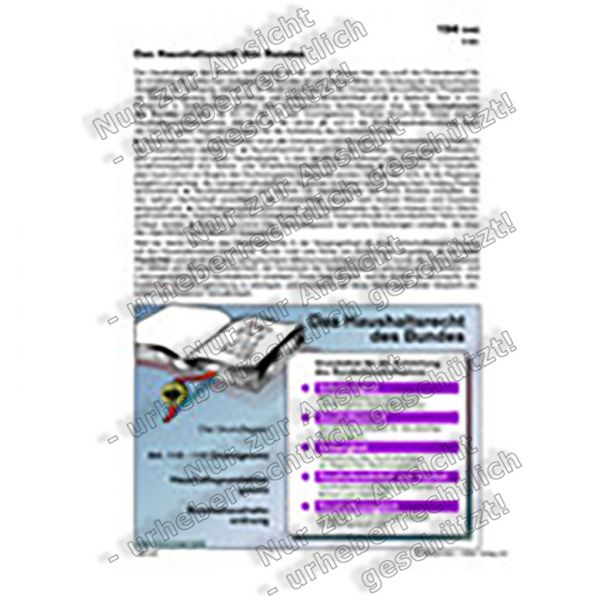

Bundesfinanzministerium - Haushaltsrecht und Haushaltssystematik

Navigation und Service
Springe direkt zu:
Inhalt Hauptmenü SucheNavigation
Hauptmenü
Servicemenü
Kontakt Gebärdensprache Leichte Sprache EN MenüHauptmenü
Themen Top-Themen Überblick Das Konjunkturprogramm Corona-Hilfen Solidaritätszuschlag Klimaschutz Geldwäsche bekämpfen Rentenbesteuerung Steuergerechtigkeit Steuern Überblick Steuerarten Internationales Steuerrecht Steuerschätzung & Steuereinnahmen Steuerverwaltung & Steuerrecht Steuerliche Themengebiete Öffentliche Finanzen Überblick Bundeshaushalt Föderale Finanzbeziehungen Stabilitätspolitik Subventionspolitik Wiedergutmachung und Kriegsfolgen Schuldenmanagement des Bundes Finanz- und Wirtschaftsdaten Flüchtlingshilfe Europa Überblick Deutsche EU-Ratspräsidentschaft 2020 Der Euro Brexit Stabilisierung des Euroraums Eurogruppe & ECOFIN EU-Haushalt Die EU auf einen Blick Deutsch-Französische Zusammenarbeit Europa-Dialog Internationales/Finanzmarkt Überblick Finanz- und Währungspolitik Finanzmarktpolitik Finanzmarktstabilität und makroprudenzielle Politik G7/G20 Bundesvermögen Überblick Privatisierungspolitik Beteiligungspolitik Zoll Überblick Außenwirtschaftsrecht Marktordnungen Postverkehr Reiseverkehr Gerechtigkeit und faire Arbeit Strukturen und Beruf Verbote und Beschränkungen Verbrauchsteuern Verkehrsteuern Warenabfertigung Zölle und Einfuhrumsatzsteuer Briefmarken & Sammlermünzen Überblick Briefmarken Sammlermünzen KonjunkturprogrammDas Konjunkturprogramm für alle in Deutschland
EuropaDeutsche EU-Ratspräsidentschaft 2020
Schließen Ministerium Minister und Hausleitung Einblicke ins Ministerium Abteilungen Bundesfinanzakademie Beiräte BMF-Geschäftsbereich Arbeiten und Ausbildung Veranstaltungen Geschichte MinisteriumMinister und Hausleitung
MinisteriumEinblicke ins Ministerium
Arbeiten und AusbildungStellenangebote und Ausbildungsplätze: aktuelle Angebote des BMF und der nachgeordneten Behörden
Schließen Service Datenportal Publikationen Einfach erklärt Gesetze und Gesetzesvorhaben Mediathek Livestream Soziale Medien, Apps und Rechner Abonnements FAQ / Glossar Formulare MinisteriumSoziale Medien: Folgen Sie uns auf Twitter, Instagram, LinkedIn und YouTube!
MonatsberichtBMF-Monatsbericht November 2020
MinisteriumKfz-Steuer-Rechner
EuropaEinfach erklärt: der ECOFIN-Rat
Schließen Presse Pressemitteilungen Termine Reden, Interviews und Namensartikel Pressekontakt Pressefotos Internationales/FinanzmarktInformationen zum Fall Wirecard und seinen Konsequenzen
MinisteriumEine Auswahl der wichtigsten Reden, Interviews & Namensartikel des Ministers im Überblick
Schließen Kontakt Gebärdensprache Leichte Sprache EN zur SucheSuche
Sie sind hier:
Aktuelle Einstellung: Themen Einstellung ändern: Top-Themen Steuern Öffentliche Finanzen Europa Internationales/Finanzmarkt Bundesvermögen Zoll Briefmarken & Sammlermünzen Themen Aktuelle Einstellung: Öffentliche Finanzen Einstellung ändern: Bundeshaushalt Föderale Finanzbeziehungen Stabilitätspolitik Subventionspolitik Wiedergutmachung und Kriegsfolgen Schuldenmanagement des Bundes Finanz- und Wirtschaftsdaten Flüchtlingshilfe Öffentliche Finanzen Aktuelle Einstellung: Bundeshaushalt Einstellung ändern: Bundeshaushalt 2021 Bundeshaushalt 2020 Bundeshaushalt 2019 Bundeshaushalt 2018 Bundeshaushalt 2017 Spending Reviews Haushalts- und Finanzpläne Haushalts- und Vermögensrechnungen des Bundes Haushaltsrecht und Haushaltssystematik BundeshaushaltHaushaltsrecht und Haushaltssystematik
Das System der Öffentlichen Haushalte
Die anliegende Publikation enthält umfassende Informationen zum Haushaltssystem der Bundesrepublik Deutschland. Nach einer Einführung in die Grundsätze des Haushaltsrechts und der Haushaltssystematik sowie einer Darstellung der Entwicklung des Haushaltsrechts wird der Haushaltskreislauf – vom Beginn des Haushaltsaufstellungsverfahrens bis zur abschließenden Rechnungslegung, Rechnungsprüfung und Entlastung – erläutert.
Download (pdf, 1MB)Themenbezogene Inhalte
Standards für Haushalte
Bundeshaushalt Integrierter Produktrahmen (IPR)
Integrierter Produktrahmen nach § 10 Abs. 2 HGrG . Stand nach Beschluss des Gremiums nach § 49a HGrG am 27. November 2019.
Download (pdf, 492KB)Bundeshaushalt Verwaltungskontenrahmen
Verwaltungskontenrahmen (VKR) nach § 10 Abs. 2 HGrG . Stand nach Beschluss des Gremiums nach § 49a HGrG am 27. November 2019.
Download (pdf, 10MB)Bundeshaushalt Standard staatlicher Doppik
Standards für die staatliche doppelte Buchführung (Standard staatlicher Doppik) nach § 7a HGrG . Stand nach Beschluss des Gremiums nach § 49a HGrG am 27. November 2019.
Download (pdf, 2MB)Bundeshaushalt Gruppierungsplan
Standard des Gruppierungsplans mit Eckpunkten und allgemeinen Vorschriften nach § 10 Abs. 2 HGrG . Stand nach Beschluss des Gremiums nach § 49a HGrG am 26./27. November 2019.
Download (pdf, 285KB)Bundeshaushalt Funktionenplan
Standard des Funktionenplans mit Eckpunkten und Allgemeinen Vorschriften nach § 11 Abs. 2 HGrG . Stand nach redaktioneller Komplettüberarbeitung und Beschluss des Gremiums nach § 49a HGrG am 26./27. November 2019.
Download (pdf, 238KB)Gremium zur Standardisierung des staatlichen Rechnungswesens
Zur Gewährleistung einheitlicher Verfahrens- und Datengrundlagen in unterschiedlichen Haushaltssystemen bei Bund und Ländern wurde nach § 49a HGrG das Gremium zur Standardisierung des staatlichen Rechnungswesens eingerichtet. Von diesem Gremium des Bundes und der Länder sind Standards für kamerale und doppische Haushalte sowie für Produkthaushalte zu erarbeiten und jährlich zu überprüfen.
Mehr erfahrenInhaltübersicht
Folgen Sie uns
Twitter Instagram LinkedIn YouTubeBeliebte Inhalte
BMF-Schreiben Publikationen Newsletter Monatsbericht Briefmarken & Sammlermünzen Umsatzsteuer-Umrechnungskurse Staatenbezogene Informationen AfA-Tabellen Formulare Gesetze und Gesetzesvorhaben MediathekRechner & Apps
Lohn- und Einkommensteuerrechner Kfz-Steuer-Rechner Soli-Rechner Zoll-und-Reise-App Zoll-und-Post-AppThemenportale
EU-Ratspräsidentschaft Bundeshaushalt Amtliche Handbücher DatenportalMetanavigation
Impressum Datenschutz Benutzerhinweise Erklärung zur Barrierefreiheit© Bundesministerium der Finanzen
Zum SeitenanfangDas BMF in den Sozialen Medien besuchen und teilen
Twitter BMF (Öffnet neues Fenster) Instagram BMF (Öffnet neues Fenster) öffnet den YouTube-Kanal des BMF. (Öffnet neues Fenster) LinkedIn BMF (Öffnet neues Fenster) Die aktuelle Seite in Ihren Sozialen Netzwerken teilen. SchließenGlossar-Hilfe
... SchließenTabelle
